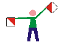

El Semáforo o Alfabeto Semáforo
Es un sistema de comunicación en el que se utiliza la posición de los brazos para representar cada letra del alfabeto. Es adecuado para emplear de día ya que se utilizan banderas para identificar claramente la posición de los brazos.
Para comunicarte de noche es posible emplear antorchas en vez de banderines; pero es preferible que utilices otro medio como el Código Morse con una linterna u otra fuente de luz.
Originalmente se creó para representar el alfabeto inglés, por lo que no incluye caracteres en Español, como la “Ñ”, y hasta el día de hoy no existe consenso sobre cómo hacerlo. En un principio su uso fue militar, pero actualmente forma parte del entrenamiento de los Scouts, al ser incluido por Baden-Powell en Escultismo para Muchachos.
Una de las formas más sencillas de aprender el alfabeto semáforo es dividirlo en cinco secciones o "Vueltas".
A continuación, el Alfabeto Semáforo se presenta tal como lo ve el sujeto que recibe el mensaje, diferenciado cada vuelta:
Primera Vuelta
A1
B2
C3
D4
E5
F6
 G7
G7
Segunda Vuelta
H8 I9 J KCero L MN
Tercera Vuelta
O P Q R S
Cuarta Vuelta
T U
Quinta Vuelta
 V
W
X
Y
Z
V
W
X
Y
Z
Inician o finalizan números
 Pausa / Descanso
Pausa / Descanso
Emisión y Recepción de Mensajes en Semáforo
Cuando transmitas un mensaje debes tomar la posición de Pausa/Descanso, sólo cuando se finaliza una palabra.
Con una palabra ve de una letra a otra, sin pasar por la posición de descanso, manteniendo la letra por 3 a 5 segundos.
Para una comunicación más fluida entre el receptor y el emisor, se recomienda que éstos sean equipos de dos personas: una con las banderillas (encargada de emitir el mensaje) y la otra con cuaderno y lápiz (para anotar el mensaje recibido).
Existen convenciones para iniciar y terminar un mensaje
|
Signo |
Uso y Significado |
|
VE Tres veces |
Atención, listo para iniciar mensaje |
|
K |
Listo para recibir, en respuesta a Atención si estás listo para recibir |
|
Q |
Esperar, en respuesta a Atención si no estás listo para recibir |
|
E Ocho veces |
Error, repetirás la palabra o número |
|
A |
Entendido, úsala para contestar todas las señales, si no se especifica lo contrario |
|
AR |
Fin del mensaje, para indicar que ya finalizaste la transmisión |
|
A |
Mensaje recibido, en respuesta a Fin del mensaje |